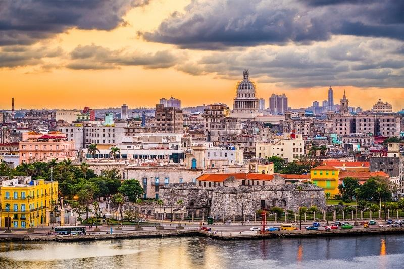
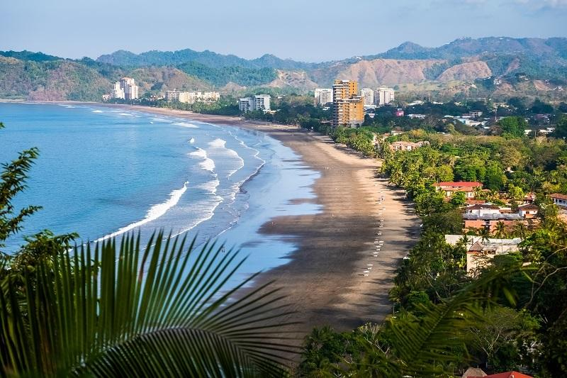
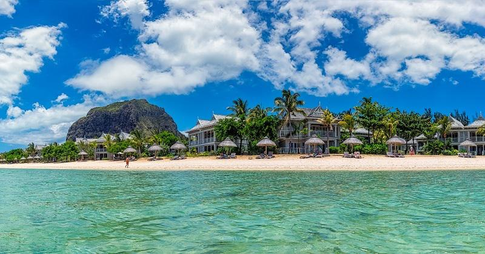

Пока в одних странах бьют тревогу и подсчитывают убытки из-за сокращения туристического потока, связанного с распространением коронавируса нового типа, в других призывают не паниковать и уверяют, что приняли все меры безопасности. Так, например, подцепившие в феврале «болячку» и отправленные в инфекционные отделения больниц Вьетнама пациенты полностью выздоровели, привело слова министерства здравоохранения издание VNExpress, и с тех пор в стране не было зарегистрировано ни одного нового случая заражения, согласно данным ВОЗ. Поэтому тем, кто переживает, что проведет свой отпуск дома, стоит рассмотреть данное направление. Куда еще можно отправиться этой весной — в материале Passion.ru!
Все новые и новые случаи инфицирования коронавирусом фиксируются в разных странах, и пока одни уже открыто заявляют об эпидемии, другие призывают не паниковать. К началу марта число умерших от коронавируса нового типа в мире превысило 3000 человек, по данным Всемирной организации здравоохранения. Помимо Китая, вирус получил наибольшее распространение в Иране, Южной Корее и Италии, позже к ним присоединились Испания, Исландия и Греция, поэтому Роспотребнадзор рекомендовал нашим соотечественникам воздержаться от поездок в эти страны, а Ростуризм и вовсе посоветовал российским туроператорам приостановить продажу туров по «небезопасным» направлениям. Многие люди прислушались к данным рекомендациям и предпочли не испытывать лишний раз судьбу, чтобы хоть как-то уберечься от возможности подцепить «болячку». Ассоциация туроператоров России оценила данную ситуацию как беспрецедентную и заявила, что потери выездного туризма уже составили около 27 млрд рублей. Но что делать тем, кто заранее планировал свой отпуск и не намерен проводить его дома? Мы собрали актуальные безопасные направления для путешествий.
Вьетнам
Как было отмечено выше, власти этой страны объявили о победе над коронавирусом и сняли карантин с поселка, где в феврале было выявлено 16 случаев заражения. В провинции Сон Лой заявили, что наконец выздоровел последний из заболевших и новых случаев заражения вирусом Covid-19 не было зарегистрировано. Глава Всемирной организации здравоохранения подтвердил, что во Вьетнаме на данный момент все спокойно, и посоветовал странам, где растет число заболевших коронавирусом, брать с них пример. Почему туристам так нравится это направление? Во-первых, в стране, которая когда-то была частью Французской колониальной империи, можно найти множество древних храмовых комплексов, живописные национальные парки с зонами отдыха в европейском стиле и прочие красоты. Во-вторых, считается что Вьетнам — рай для гурманов, ведь именно здесь можно насладиться оригинальными блюдами мексиканской, французской, итальянской, китайской, а также местной кухни. В-третьих, здесь удивительная природа и богатые культурные традиции.
Бали
Пока мировая общественность с ужасом следит за географическим перемещением коронавируса, правительство индонезийской провинции Бали призывает не впадать в панику и уверяет, что на острове все спокойно. С похожими симптомами вируса Covid-19 в больницы попали 29 местных жителей, побывавших недавно за границей, после прохождения лабораторных тестов на выявление вируса 22 случая были отрицательными, а 7 человек еще ожидают результаты. Чтобы не допустить распространение «заразы», в местных больницах оборудовали изолированные комнаты на тот случай, если у кого-то еще будет подозрение на вирус, в аэропорту активно применяют скрининг-тесты, которые помогут оценить риски и оперативно принять меры. Почему популярность данного направления растет с каждым годом? Люди едут на Бали, чтобы найти свой дзен, пересмотреть свое отношение к какой-либо ситуации, забыть о проблемах и понять, чего же именно они хотят от жизни. А комфортный климат, красивая природа, традиционная кухня, интересные места и удивительные люди делают отдых здесь действительно незабываемым.
Венгрия
Власти данной страны также пока не зафиксировали у себя случаев заражения вирусом Covid-19. Потому Венгрия остается одной из самых бюджетных и колоритных стран для путешествия весной. Чем там можно заняться? Для начала оценить невероятную архитектуру и атмосферу Будапешта, посетить дворцы и музеи, прогуляться по живописным улочкам и отведать местные деликатесы. А затем можно продолжить свой отдых на термальных источниках и непременно продегустировать гуляш по-венгерски вместе с традиционными напитками.
Куба
Островное государство в северной части Карибского моря тоже будет отличным вариантом для весеннего отдыха. На Кубе практически всегда жарко — температура не опускается ниже +25-27 °C. Знакомство со страной рекомендуем начать с посещения столицы, ведь район старой Гаваны, представляющий собой хорошо сохранившийся кусочек кубинской истории, включен в перечень объектов Мирового наследия ЮНЕСКО и в полной мере позволит познакомиться с культурой и традициями страны. Местные жители любят обсудить политику за бокалом какого-нибудь крепкого напитка и делиться последними новостями со всеми, кто оказался в радиусе досягаемости. А затем можно отправиться в курортный город в провинции Матансас, где находится пляж Варадеро, признанный в свое время ЮНЕСКО одним из самых чистых в мире.
Коста-Рика
Тем, кто давно мечтал побывать в Центральной Америке, можно обратить внимание на данное направление. Страна, которую омывают воды Карибского моря и Тихого океана, точно понравится любителям экстремального отдыха. Большую часть Коста-Рики занимают джунгли, тут можно открыть для себя красоты вулканов, каскады водопадов, необитаемые острова, белоснежные пляжи, богатый животный и растительный мир, а также вкусную традиционную кухню. Многие признаются, что именно здесь в полной мере ощутили все прелести экотуризма и бережного отношения к природе.
Маврикий
Этот остров считается одним из самых безопасных мест для отдыха, ведь вероятность того, что ваш отпуск будет омрачен какой-то непредвиденной ситуацией, не так уж велика. Ради чего путешественники преодолевают такой путь? Во-первых, где еще можно найти лазурный океан и белые пляжи в обрамлении пальм и казуариновых рощ, кроме как на Маврикии. Во-вторых, здесь комфортный климат и купаться можно круглый год. В-третьих, на юго-западе острова можно найти невероятной красоты разноцветные дюны — семицветные пески Шамарель. В-четвертых, данное направление идеально подойдет для любителей серфинга и дайвинга. Что касается коронавируса, то в этой стране приняты меры безопасности, так, например, туда не пропустили около 70 пассажиров самолета авиакомпании Alitalia, которые прибыли с севера Италии. Пассажирам предложили или карантин в местной больнице, или возвращение на родину. И на данный момент власти держат ситуацию под контролем.